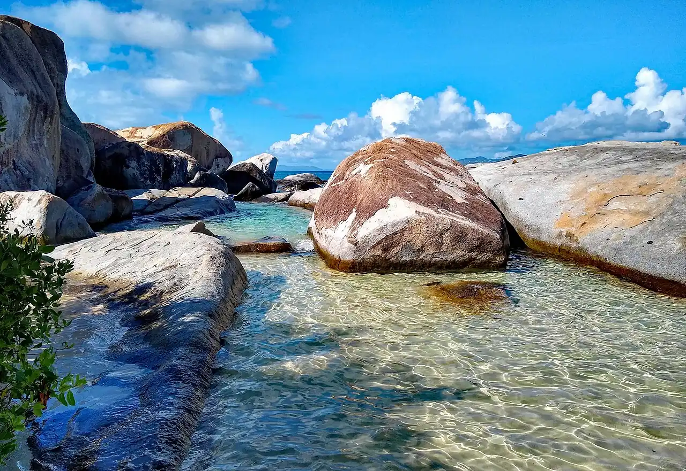

The Baths — Virgin Gorda
Virgin Gorda, Îles Vierges britanniques · snorkeling, baignade

Chaos de blocs de granit géants posés sur le sable, qui forment grottes, passages et bassins d’eau claire. Un sentier aménagé serpente entre les rochers jusqu’à la baie voisine de Devil’s Bay.
- Lieu
- Virgin Gorda, Îles Vierges britanniques
- Niveau
- Débutant
- Activités
- snorkeling, baignade
- Type d'eau
- Mer / océan
- Coordonnées
- 18.43, -64.45 (position approximative du secteur)
Dangers à connaître
- Houle du nord en hiver : baignade parfois déconseillée (drapeau rouge).
- Rochers glissants et passages étroits sur le sentier.
Le conseil d'Ocean Buddy
Viens tôt le matin ou en fin d’après-midi : le site est bondé quand les bateaux de croisière sont au port.
Ouvrir dans Ocean Buddy Télécharger sur l'App Store
Source : Fiche Ocean Buddy · septembre 2026 · à vérifier localement.